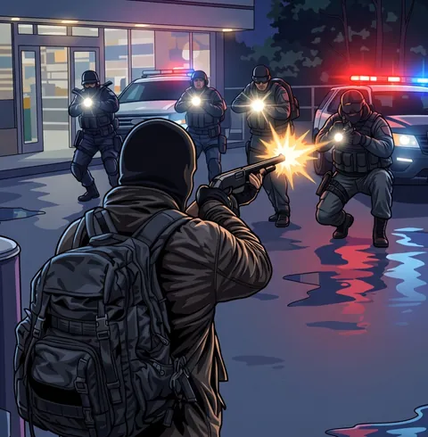
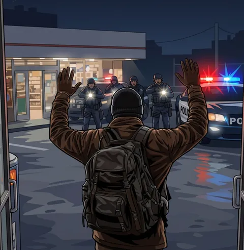

Как стать полицейским в ROB RUN
Зайди в Лути-Бей гражданским, иди в полицейский участок и выбери Начать службу у дежурного. Тебе выдадут бесплатное снаряжение и служебную машину, но личными вещами на смене пользоваться нельзя. Если все места в полиции заняты, подожди или прими приглашение Подкрепление полиции: с ним дают бесплатную экипировку и бонус к зарплате.
Обновлено . Игра в раннем доступе и меняется каждую неделю.
Как заступить на службу
- Зайди в Лути-Бей без маски, гражданским.
- Иди в полицейский участок в Палмсайде (он на карте ниже).
- Поговори с дежурным и выбери Начать службу. Мест в полиции ограниченное число.
- Выбери экипировку: комплект Патрульный бесплатный, жетон один раз даёт экипировку своего звания.
- Возьми служебную машину: Longhorn Guard, Longhorn Outrider (внедорожник) или Longhorn Wild Guard (маслкар).
- Чтобы закончить, выбери Завершить службу. Текущая экипировка будет утеряна.

Зарплата
- За правомерные действия деньги идут на счёт. У смены есть лимит заработка.
- В конце каждой смены выдают Конфискат на заработанную сумму.
- Арест приносит гораздо больше, чем убийство. Приказ сдаться даёт временный бонус к награде за арест, включённая сирена на служебной машине тоже.
- Приглашение «Расширение штата полиции! Бонус к зарплате» на время даёт бесплатную экипировку и увеличенную зарплату.
Жетоны и экипировка
- Без жетона ты работаешь Патрульным. Эта бесплатная экипировка улучшается со временем жизни штата.
- Жетон сержанта, Жетон лейтенанта и Жетон капитана один раз дают выбрать экипировку своего звания на службе. Звания идут так: сержант I и II, лейтенант I и II, капитан.
- Жетоны находят в городе.
- Если погибнешь на службе, окажут медпомощь, но для экипировки по жетону нужен новый жетон. Инвентарь полицейский не теряет.
- Если уехать из Лути-Бей до приезда федералов (таймер «Облава федералов через»), потраченный жетон вернут.
Правила на службе
- Полицейские могут убивать только преступников, преступники могут убивать и друг друга.
- Арестовать можно преступника, который сдался или в нокауте. Арестованный теряет сумку, но сохраняет экипировку.
- Полицейские могут конфисковать у преступников сумки и грузы.
- Арестованный может предложить взятку прямо со своего счёта.
- Полиция может перекрыть мосты из Лути-Бей и таранить машину преступника.
- За нарушения на дороге (сбить человека, вандализм) полицейских и гражданских на время отправляют в изолятор.
 Ограбление
Ограбление
Погоня
АрестЧастые вопросы
Почему не получается стать полицейским?
Все места в полиции заняты. Подожди, пока освободится место, или прими приглашение «Подкрепление полиции», когда участку нужны люди.
Теряет ли полицейский вещи при смерти?
Нет, инвентарь не теряется. Но экипировку по жетону после смерти можно взять только с новым жетоном.
Как платят полицейским?
Во время смены деньги за правомерные действия идут на счёт, а в конце смены выдают конфискат на заработанную сумму.
Можно ли полицейскому взять своё оружие?
Нет. На службе только бесплатное государственное снаряжение, личные вещи недоступны.
Ещё по ROB RUN
- Карта Лути-Бей
- Ключи
- Как сменить сервер и играть с другом
- Счёт в банке и отмывка
- Что делать с грузами
- Таймер вайпа
- Калькулятор рулетки
- Калькулятор срока
- Гайды
Тексты и названия: файлы игры (подсказки, кодекс, советы на загрузке). Дежурный в участке и «Начать службу»: гайды сообщества, ноябрь 2026.